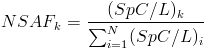
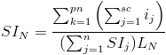
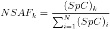
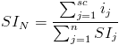

crux quantify
Usage:
crux quantify [options] <input-PSM><database>Description:
Given a collection of scored PSMs, produce a list of proteins ranked by their a specified score. Quantify supports two types of quantification: Normalized Spectral Abundance Factor (NSAF) and Normalized Spectral Index (SIN). The NSAF method is from a publication by Paoletti et al. (2006). The SIN method is from the Griffin et al. (2010) paper. The two quantification methods are listed below:
Protein Quantification
For each protein in a given database, the NSAF score is:

where:
- k is a particular protein from the input database
- (SpC)k is the number Spectra identified for protein k
- L is the length of protein k (number of amino acids)
- N is the total number of proteins in the input database
For each protein in a given database, the SIN score is:

where:
- N is a particular protein from input database
- pn is peptide matched to the protein n
- sc is spectra matched to peptide
- ij is ion intensity of spectra
- L is length of protein n
Peptide Quantification
For each peptide in a given database, the NSAF score is:

where:
- k is a particular peptide from the input database
- (SpC)k is the number of spectra identified from peptide k
- N is the total number of peptide in the input database
For each peptide in a given database, the SIN score is:

where:
- N is a particular peptide from input database
- sc is spectra matched to peptide N
- ij is ion intensity of spectra
Input:
Output:
<input-PSM>– Tab delimited text file (for example percolator.target.txt, or qranker.target.txt)<database>– The name of the file in fasta format or the directory containing the protein index from which to retrieve proteins and peptides.Options:
The program writes one file to the folder
crux-outputby default. The name of the output folder can be set by the user using the--output-diroption. The following file will be created:- quantify.target.txt: a tab-delimited text file containing the protein IDs and their corresponding scores, in sorted order. In addition, a log file called
- quantify.log.txt will be written in the same directory.
--measure NSAF|SIN– Type of analysis to make on match results: (NSAF | SIN). Default SIN.--quant-level PROTEIN|PEPTIDE- Quantification at protein or peptide level. See how methods differ under Description. Default=PROTEIN.--threshold <double>- The q-value threshold (all PSMs with q-value higher than this will be ignored). Default = 0.01.--fileroot <string>– Thefilerootstring will be added as a prefix to all output file names. Default = none.--input-MS2 <string>– ms2 file corresponding to the psm file. Required if you plan to measure the SIN. Ignored for NSAF.--output-dir <filename>– The name of the directory where output files will be created. Default = crux-output.--unique-mapping <unique-mapping>- Ignore peptides with multiple mappings to proteins (T,F). Default (F)--overwrite T|F- Replace existing files if true (T) or fail when trying to overwrite a file if false (F). Default = F.--version T– Print the version number and quit. Please note that you must include the 'T' after --version.